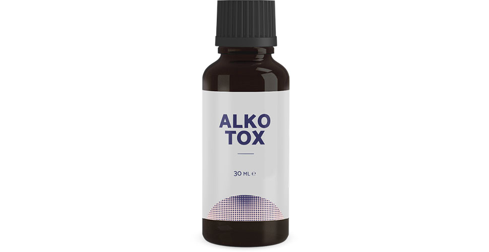

Kaip gydytojas-narkologas, tvirtinu, kad nustoti gerti gali kiekvienas
Virš 20 metų dirbu narkologu didelėje klinikoje. Per visą savo praktiką sugebėjau padėti daugeliui žmonių kovoje prieš priklausomybę. Daugeliui tiesiog išgelbėjau gyvybę. Niekada nebūčiau pagalvojęs, kad mano sūnus bus vienas jų. Ilgą laiką negalėjau jam padėti man žinomais būdais ir jau beveik praradau viltį. Man pavyko rasti naują būdą. Dabar noriu visiems papasakoti, kaip atsikratyti priklausomybės ir daugiau niekada negrįžti prie alkoholio.

Atsižvelgdamas į praeitį, matau, kad klinika, pacientai, seminarai ir kongresai buvo svarbesni už mano šeimą. Visiškai atsiduodavau kitiems žmonėms, pamiršdamas apie savo gyvenimą. Galbūt, dėl to sūnus tapo mano pacientas – dėl pasąmonėje glūdinčio noro būti arčiau manęs. Sunkumai šeimoje ir nesutarimai tarp artimųjų – viena pagrindinių alkoholizmo priežasčių. Ir tik vėliau prasideda problemos su darbu, pinigais, santykiais su žmonėmis, psichologiniai ir fiziologiniai nukrypimai.
Aš ir mano žmona darėme viską, kad suteiktumėte sūnui gerą išsilavinimą ir padorų gyvenimą. Tik dabar suprantu, kad jam trūko bendravimo su manimi. Todėl koledže jis paragavo alkoholio ir nesugebėjo sustoti. Iš pradžių jam sekėsi slėpti problemą su alkoholiu...
Prisimenu tą dieną, kai man paskambino ir atvėrė akis. Dar prieš pusę metų sūnų išvarė iš koledžo. Jis pradėjo gerti kiekvieną dieną. Ir toliau buvo dar blogiau – jį metė mergina, prasidėjo girtos muštynės baruose, amoralus elgesys ir pirmosios problemos su įstatymais. Viso to nežinojau ir net nenutuokiau...
Mūsų laukė dveji sudėtingos reabilitacijos metai. Dariau viską, kad padėčiau jam. Sūnus gydėsi, valė kraują, dalyvavo psichoterapijos kursuose. Po kiek laiko pasirodė teigiami pokyčiai. Jį išrašė, ir jis iš karto nuvyko į barą. Žiauriausia buvo ne tai, kad žmonės juokėsi, kad esu blogas narkologas ir negaliu išgydyti savo sūnaus, o tai, kad tikrai buvau bejėgis, o mano vaikas kiekvieną dieną nuodydavo save ir griaudavo savo gyvenimą.
Laikui bėgant, psichologas padėjo atkurti mūsų santykius. Sūnus prisipažino, kad nebepyksta ant manęs. Tiesiog nustoti gerti buvo ne jo jėgoms. Tarsi kažkas verčia jį tai daryti, ir jis negali sustoti. Kitaip tariant, problema buvo ne psichologinis, o būtent fizinė priklausomybė, kurios niekaip nepavykdavo pašalinti. Žinoma, žinojau, kad taip būna. Tradiciniai gydymo metodai, kurie praktikuojami visame pasaulyje, nepadėjo... Pradėjau ieškoti kitos, unikalios metodikos.

vienoje internetinėje konferencijoje paskutinis pasirodė iki tol nežinomas gydytojas-narkologas, kalbėjęs įdomia man tema. Nauja priemonė, parodžiusi išskirtinius statistinius duomenis alkoholizmo gydymo srityje, jau įtraukta į kaimyninių šalių terapiją.

Taigi, ką sužinojau. sudėtyje nėra blokatorių, trankvilizatorių ir kitų įprastų medžiagų. Jo sudėtyje yra natūralūs ekstraktai, kurie atlieka pagrindines funkcijas, gydantis nuo priklausomybės nuo alkoholio:
- sukelia natūralią alkoholio netoleravimo reakciją;
- gerina mąstymo ir kalbos funkcijas;
- pašalina abstinencijos sindromo simptomus;
- gerina emocinę būseną, pašalindamas agresijos ir depresijos požymius;
- išvalo kraują ir kraujagysles;
- šalina toksines medžiagas iš organizmo.
Man, kaip specialistui su gana dideliu darbo stažu, buvo sunku patikėti.Tokį poveikį galima pasiekti ne vienu preparatu, o tik kompleksiniu darbu. Kadangi visus žinomus metodus išbandžiau ir jie nepadėjo, nusprendžiau duoti sūnui .
Mano sūnus jau dvi savaites gėrė. Ryte, kad pašalinčiau abstinencijos sindromą, daviau jam . Po valandos jis stojo po dušu ir išėjo papusryčiauti. Pirmą kartą per ilgą laiką jis nesijautė blogai. Jo rankos tikrai nedrebėjo, balsas buvo lygus, o vyzdžiai normalūs. Jokių pagirių požymių. Jis netgi juokavo ir šypsojosi, tarsi vakar negulėjo girtas savo vėmalų klane…

Po dviejų preparato vartojimo savaičių sūnus nepratrūko, o gyveno normalų gyvenimą. Sūnus atliko tyrimą ir jo analizės mane nustebino – visi rodikliai buvo normalūs, kraujas be toksinų ir priemaišų. Ir svarbiausia - sūnus nustojo gerti. Ar ilgam? Pasirodė, taip.
Po dar vienos savaitės jis prisipažino, kad netikėjo tuo, kad naujas gydymas padės, pradėjo vartoti tik dėl manęs. O vėliau tiesiog nustojo galvoti apie tai, kad nori gerti. Atsirado teigiamos mintys, būklė pagerėjo. Net pradėjo kurti planus dėl darbo ir grįžimo į koledžą kitais metais.
sūnus pavartojo prieš pusę metų. Per šį laiką jis nė karto nepalietė butelio ir grįžo į normalų gyvenimą. Dabar padedu netgi tiems, kuriuos laikiau beviltiškais pacientais. Man pavyko užtikrinti tiekimą į mūsų šalį. Ir netgi daugiau! Dabar bet kuris norintis gali jį užsisakyti gamintojo tinklalapyje be permokų ir muitų.

Jeigu jūs arba jūsų artimieji negali atsikratyti priklausomybės ir jau beveik prarado viltį... Žinokite, kad visada yra išeitis! Aš pats neseniai buvo jūsų vietoje, nors maniau, kad dėl mano specialybės tokio niekada neatsitiks. Gyvenime būna įvairių aplinkybių. Žinau, kiek žmonės išleidžia reabilitacijai. Daugeliu atvejų 85% pacientų neturi tokių didelių pinigų. Noriu padėti kiekvienam, todėl dovanoju 50% nuolaidą . Įsigiję šią priemonę, visam laikui atsisveikinsite su alkoholiu.